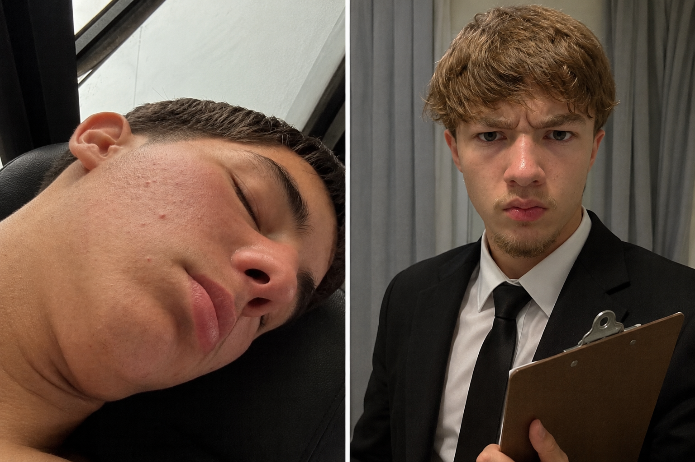
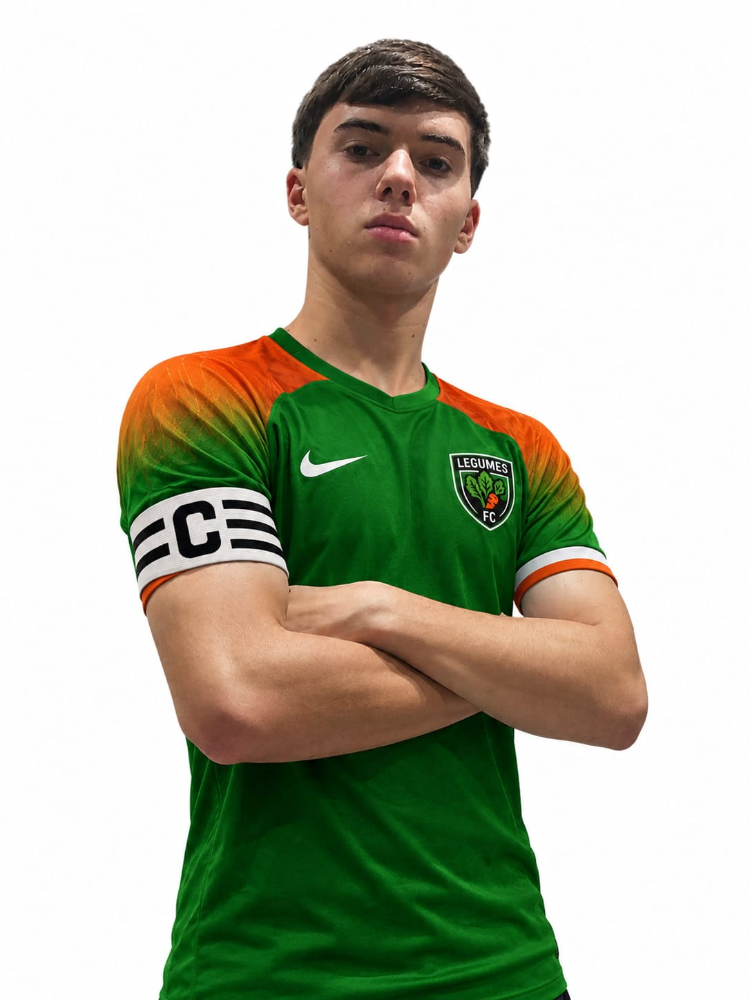

Últimas Notícias!
Acompanhe um pouco das últimas notícias sobre o Legumes Futebol Clube, Eventos, Contratações de atletas e mais!

Puskas chega no centro de treinamento e encontra o jogador Picanha(Heitor) deitado cochilando na cadeira enquanto os jogadores já estão aquecendo, jogador leva bronca e rapidamente já vai para o gramado começar os aquecimentos.

Após decisão do próprio ex-capitão, Théo é escolhido como novo capitão dos Legumes FC, e terá a responsabilidade de liderar o time em campo e fora dele.

DG (Douglas) é contratado pelo Legumes FC! Após estudo de Scout dos Legumes FC, chegam a um acordo com o goleiro DG, o goleiro chega com expectativas de suprir a má fase do goleiro atual, sendo uma contratação desejado pelos próprios jogadores do time.